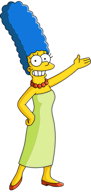
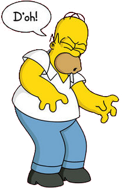
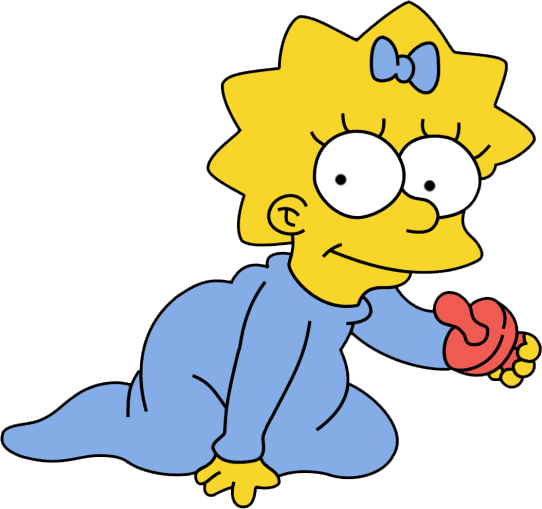

Bart

Bart is a self-proclaimed underachiever who is constantly in detention. He is easily distracted. His penchant for shocking people began before he was born: Bart "mooned" Dr. Hibbert while he performed a sonogram on Marge, and moments after being born he set fire to Homer's tie (Marge saying that he could not have done it on purpose because he was only ten minutes old). Bart's first words were "Ay Caramba".
Marge
Marge is the mother of the Simpson family, who spends most her time doing housework, caring for Maggie, being supportive of and indulging Lisa and either disciplining or protecting Bart from Homer's wrath. Marge is the only member of the family who encourages church attendance. She also appears to have significant athletic ability. She is bilingual, being fully fluent in French. Her marriage with Homer is also very strong.
Homer
Homer was raised on the Simpson farm by his parents until they were forced to move out in 1964 due to Homer spooking the cows by jumping out of a bale of hay and scaring them into giving sour milk, causing the bank to foreclose it. At some point during his childhood, Abe (who was in his early forties at the time of Homer's birth) seemed to feed beer to Homer Simpson, but he quit drinking beer until he was older upon Barney's suggestion after he caused a multi-car pileup in his playschool car. In the late 1960s, while Homer was between nine and twelve years of age, Mona(his mother) went into hiding following a run-in with the law.
Lisa

Lisa was named after a train called Lil' Lisa on her parents' 1st anniversary. She is a charismatic 8-year-old girl, who exceeds the standard achievement of intelligence level of children her age. Not to everyone's surprise, she is also the moral center of her family. In her upbringing, Lisa lacks parental involvement of Homer and Marge, which leads to hobbies such as playing saxophone and guitar, riding and caring for horses, and interest in advanced studies. In school, Lisa's popularity is affected by those who view her as a geeky overachiever, which leaves her with only a few friends. She focuses on her goals and strives to reach her potential, and at the age of eight she is already a member of MENSA with an IQ of 159.
Maggie
When Marge became pregnant with Lisa, she and Homer bought their first home. Seven years later, Homer felt financially secure enough to quit his job at the power plant and take his dream job at Barney's Bowlarama. Soon after, Marge became pregnant with Maggie, and unable to support his new family member, Homer reapplied for his job at the power plant. Homer fell into a deep depression as a result, but when he held Maggie for the first time after she was born he loved her at first sight. He keeps all of Maggie's baby photos in his office to cheer him up at his work place.